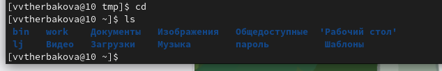
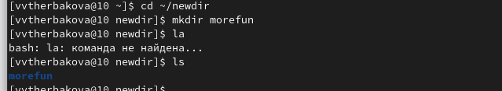
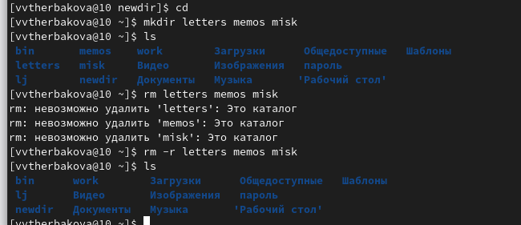
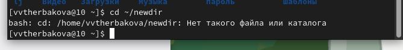
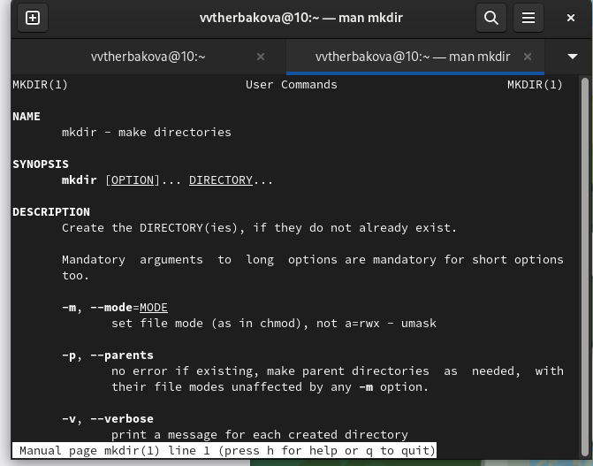
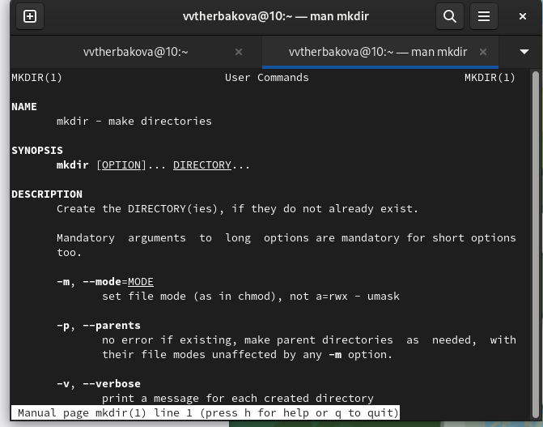

Информация
Докладчик
- Щербакова Вероника Владимировна
- Учиница
- НБИбд-03-22
- Российский университет дружбы народов
Вводная часть
Актуальность
- для тех, кто не умеет пользоваться систепой посредствам командной строки
Объект и предмет исследования
Цели и задачи
- Приобретение практических навыков взаимодействия пользователя с системой по- средством командной строки.
Материалы и методы
- Процессор
pandoc для входного формата Markdown
- Результирующие форматы
- Автоматизация процесса создания:
Makefile
Создание презентации
Процессор pandoc
Формат pdf
- Использование LaTeX
- Пакет для презентации: beamer
- Тема оформления:
metropolis
Код для формата pdf
slide_level: 2
aspectratio: 169
section-titles: true
theme: metropolis
Формат html
Код для формата html
- Тема задаётся в файле
Makefile
REVEALJS_THEME = beige
Результаты
Получающиеся форматы
- Полученный
pdf-файл можно демонстрировать в любой программе просмотра pdf
- Полученный
html-файл содержит в себе все ресурсы: изображения, css, скрипты
Элементы презентации
Актуальность
Цели и задачи
Материалы и методы
Содержание исследования
- Определите полное имя вашего домашнего каталога (рис. [-@fig:001])
 ##
##
- Перейдите в каталог /tmp.тВыведите на экран содержимое каталога /tmp. Для этого используйте команду ls с различными опциями.(рис. [-@fig:002])
 ##
##
- Определите, есть ли в каталоге /var/spool подкаталог с именем cron?(Нет)(рис. [-@fig:003])
 ##
##
- Перейдите в Ваш домашний каталог и выведите на экран его содержимое. Опре- делите, кто является владельцем файлов и подкаталогов? (Владельцем являюсь я, тк моя домашняя папка)(рис. [-@fig:004])  ##
- домашнем каталоге создайте новый каталог с именем newdir.+ проверка создания(рис. [-@fig:005])
 ##
##
- В каталоге ~/newdir создайте новый каталог с именем morefun.(рис. [-@fig:006])  ##
- В домашнем каталоге создайте одной командой три новых каталога с именами letters, memos, misk. Затем удалите эти каталоги одной командой.(рис. [-@fig:007])  ##
- Попробуйте удалить ранее созданный каталог ~/newdir командой rm. Проверьте, был ли каталог удалён(рис. [-@fig:008])
 ##
##
- Удалите каталог ~/newdir/morefun из домашнего каталога. Проверьте, был ли каталог удалён.(Уже удален,тк удалили папку в которой он лежал)(рис. [-@fig:009])  ##
- команды man(рис. [-@fig:010])
 ##
##
- Используйте команду man для просмотра описания следующих команд: cd, pwd, mkdir, rmdir, rm. (рис. [-@fig:011])
 (рис. [-@fig:012])
(рис. [-@fig:012])  (рис. [-@fig:013])  (рис. [-@fig:014])
(рис. [-@fig:013])  (рис. [-@fig:014])  (рис. [-@fig:015])
(рис. [-@fig:015])  ##
##
- Используя информацию, полученную при помощи команды history, выполните мо- дификацию и исполнение нескольких команд из буфера команд(рис. [-@fig:017])
 (рис. [-@fig:018])
(рис. [-@fig:018]) 
Результаты
Приобрели практические навыки взаимодействия пользователя с системой по- средством командной строки
Итоговый слайд
Спасибо за внимание!!!